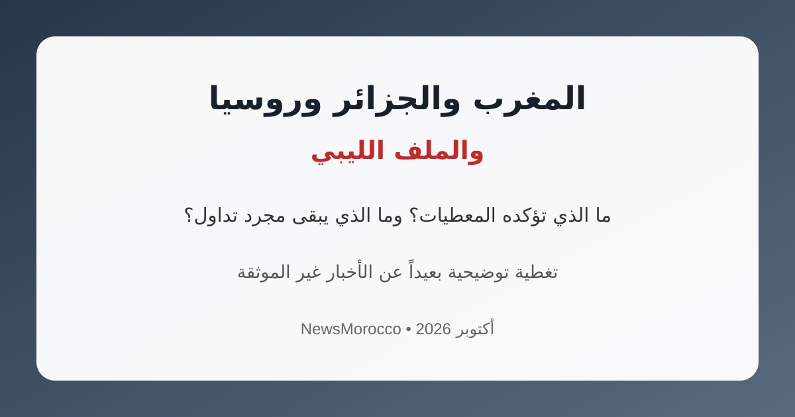

المغرب والجزائر وروسيا والملف الليبي.. ما الذي تؤكده المعطيات؟

تداولت منصات التواصل الاجتماعي خلال الأيام الأخيرة منشورات تربط بين المغرب والجزائر وروسيا والملف الليبي، وتتحدث عن رسائل أو مواقف روسية جديدة مرتبطة بهذه الملفات. غير أن مراجعة المعطيات المنشورة والمتاحة لا تسمح بتقديم هذه الادعاءات باعتبارها موقفاً رسمياً مؤكداً.
ما هو المؤكد؟
المعطيات المتاحة تؤكد استمرار الاتصالات الروسية الجزائرية حول عدد من الملفات الإقليمية والدولية، ومن بينها منطقة الساحل وملف الصحراء الغربية، كما تؤكد تصريحات جزائرية رسمية استمرار علاقات الصداقة والشراكة مع روسيا.
وفي المقابل، لا تتوفر في المصادر التي راجعناها وثيقة رسمية موثوقة تؤكد وجود رسالة روسية جديدة إلى المغرب بالصيغة التي يتم تداولها على منصات التواصل، ولا معطيات رسمية تربط ذلك مباشرة بزيارة خالد حفتر إلى المغرب.
الملف الليبي
في سياق منفصل، بدأ خالد حفتر زيارة رسمية إلى المغرب في أكتوبر 2026، وهي زيارة حظيت باهتمام إعلامي بالنظر إلى علاقات المغرب التاريخية مع مسار الحوار الليبي. ولا ينبغي الخلط بين هذه الزيارة وبين الادعاءات غير الموثقة المتداولة حول مواقف روسية أو جزائرية مرتبطة بها.
الخلاصة
الأفضل التعامل مع المنشورات المتداولة بحذر إلى حين صدور بيانات رسمية أو تقارير موثوقة تؤكد مضمونها. وستواصل NewsMorocco متابعة أي تطورات رسمية جديدة في هذا الملف.